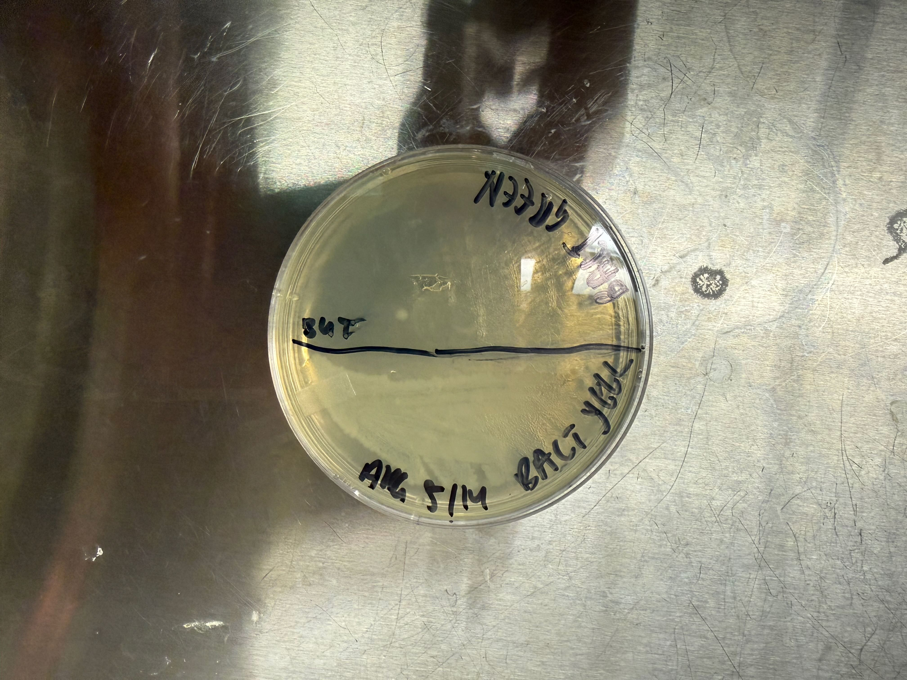
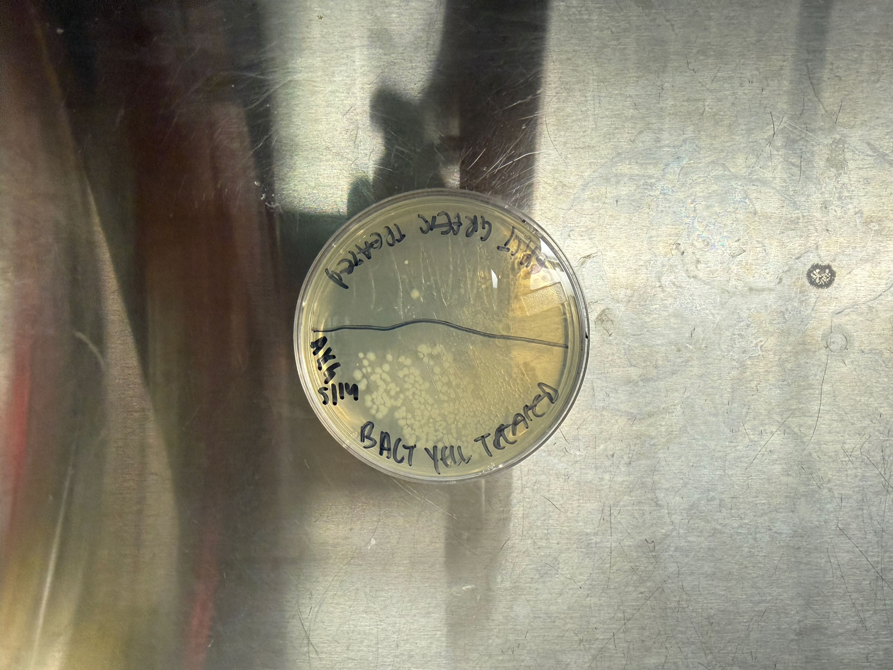
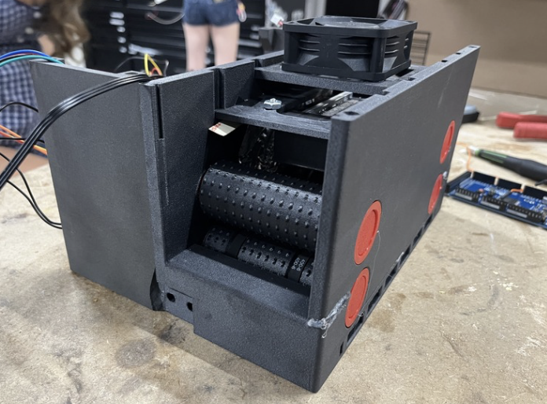

STEM II
STEM II is a project-based engineering course focused on designing, building, testing, and improving assistive technology. This page contains documentation of the problem, design process, prototype, and final poster for the Assistive Technology project.
Sponge Desiccation and Microbial Sanitation System for Individuals with Muscular Weakness
Project Overview
Individuals with musculoskeletal disorders and age-related muscle weakness often struggle to complete everyday cleaning tasks, such as drying and sanitizing kitchen sponges, which can lead to bacterial contamination and health risks. This project aims to design an assistive technology that provides a low-effort, automated solution for simultaneously desiccating and sanitizing kitchen sponges, enabling users to maintain hygiene without physical strain.
The design process involved researching existing sponge sanitation methods, identifying user needs and constraints, and iteratively prototyping a system that combines mechanical drying with UV-C light sanitation. The final prototype includes rollers to squeeze out moisture, a heater and fan for desiccation, and medical-grade UV-C light for microbial sanitation. Testing and feedback from potential users helped refine the design to ensure it effectively addresses the problem while being user-friendly and accessible.
Problem Statement
Individuals with musculoskeletal disorders and age-related muscle weakness lack a low-effort, automated mechanism to simultaneously desiccate and sanitize kitchen sponges, preventing them from independently completing everyday cleaning tasks without risking bacterial contamination.
Design Approach
Roller prototypes were constructed to find optimal dimensions of roller size, compression, and pattern. For example, we tested rollers with ridges as well as rollers with small spikes.
Prototype
The final prototype consisted of two sets of rollers, a 250W heater, a fan, medical-grade UV-C light, and a conveyor belt. A user can either run a 20 second short cycle consisting of rollers and UV light. Or a long deep sanitize that includes the heater and fan.
Photos / Build Documentation
Add photos, sketches, CAD screenshots, testing images, or build-process notes here. Use this section to show how the prototype developed over time.



